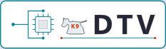

MiniMe II LCD — 480×320 mocks (real logo + menu chips)
1 · Display · Dark
* Light
Display
2 · Display · Light
) Dark

Display
3 · Log (LOG | Serial) · Dark
* Light
Log
4 · Log (LOG | Serial) · Light
) Dark
Log
 * LightDisplay* LightLog* LightDisplay* LightLog
* LightDisplay* LightLog* LightDisplay* LightLog